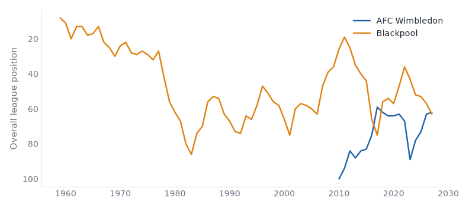
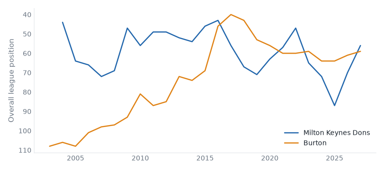

26 fixtures across 3 divisions, week of 14 November 2026.
AFC Wimbledon host Blackpool in League One on Saturday 14 November. AFC Wimbledon live between League One and League Two; they are 1 division above that this season; they sit 18th with 13 points from 13 games, form LDLLL. Blackpool are, on the balance of their record, a League One club; they sit 19th with 12 points from 12 games, form DLWLL. They have met 10 times in league play since 2017/18: AFC Wimbledon 4 wins, Blackpool 3, 3 drawn.

|
|
Milton Keynes Dons host Burton in League One on Saturday 14 November. MK Dons belong in League One — 67% of their 24 recorded seasons; they sit 12th with 18 points from 13 games, form WWWLW. Burton Albion are, on the balance of their record, a League Two club; they are 9 seasons into a spell 1 division above that; they sit 15th with 17 points from 14 games, form LWDDL. They have met 8 times in league play since 2019/20: MK Dons 3 wins, Burton Albion 2, 3 drawn.

|
|
Sheffield Weds v Plymouth
Sat 14 Nov · fallen giant compare
Sheffield Wednesday 9th (DDLLW), Plymouth Argyle 5th (DWLLW). Sheffield Wednesday have played in the top flight.
Stockport v Reading
Sat 14 Nov · fallen giant compare
Stockport County 2nd (WLDWW), Reading 6th (LDWWL). Reading have played in the top flight.
Wigan v Barnsley
Sat 14 Nov · fallen giant compare
Wigan Athletic 21st (DWLLL), Barnsley 23rd (DLLLL). Wigan Athletic have played in the top flight.
Bristol Rvs v Chesterfield
Sat 14 Nov · below level compare
Bristol Rovers 17th (LDLLL), Chesterfield 10th (LWDLD). At least one of them sits below where their record says they belong.
Fleetwood Town v Tranmere
Sat 14 Nov · below level compare
Fleetwood Town 16th (WLLWD), Tranmere Rovers 11th (WDWLD). At least one of them sits below where their record says they belong.
Shrewsbury v Oldham
Sat 14 Nov · fallen giant compare
Shrewsbury Town 15th (LDWWL), Oldham Athletic 18th (WLDLW). Oldham Athletic have played in the top flight.
| Sat 14 | Colchester v Gillingham | below level | compare |
| Sat 14 | Crewe v Newport County | compare | |
| Sat 14 | Exeter v Cheltenham | relegated last season | compare |
| Sat 14 | Port Vale v Accrington | below level | compare |
| Sat 14 | Rochdale v York | promoted last season | compare |
| Sat 14 | Salford v Northampton | fallen giant | compare |
| Sat 14 | Swindon v Grimsby | fallen giant | compare |
Scunthorpe v Worthing
Sat 14 Nov · below level compare
Scunthorpe United 23rd (LLLLL), Worthing 6th (LDWWW). At least one of them sits below where their record says they belong.
Southend v Aldershot
Sat 14 Nov · 2 below level compare
Southend United 3rd (LDDWW), Aldershot Town 14th (WLLLL). At least one of them sits below where their record says they belong.
| Sat 14 | Carlisle v Boston Utd | fallen giant | compare |
| Sat 14 | Eastleigh v Fylde | above level | compare |
| Sat 14 | Gateshead v Barrow | relegated last season | compare |
| Sat 14 | Harrogate v Altrincham | relegated last season | compare |
| Sat 14 | Hartlepool v Wealdstone | below level | compare |
| Sat 14 | Hornchurch v Tamworth | 2 above level | compare |
| Sat 14 | Kidderminster v Halifax | below level | compare |
| Sat 14 | Sutton v Solihull | above level | compare |
| Sat 14 | Yeovil v Boreham Wood | compare |
Reviewed on Monday review, tiers 1–2 and Tuesday review, tiers 3–5.
Built from the English football database, tiers 1–5 from 1958/59. Results from football-data.co.uk. Archived copy.